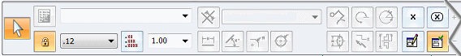
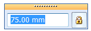
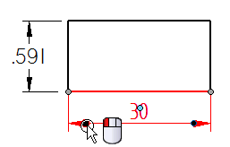
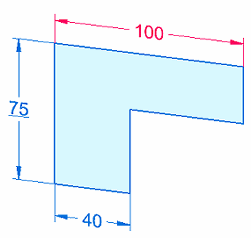
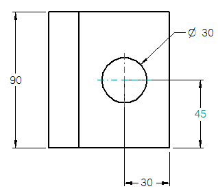

Edit a 2D dimension (sketch, profile, draft)
You can edit the 2D dimension formatting and values on synchronous sketches, ordered profiles, and in draft, based on the behavior of the selected dimension.
-
Use the Dimension command bar to edit the dimension format:

-
Use the dimension value edit box to edit the dimension value:

-
Use the terminator handle shortcut menu to change the terminator type, flip the terminators, and hide and show projection lines. For more information, see Dimension edit handles.

|
For dimensions that are |
To |
Do this |
|
Driving dimensions |
Edit the dimension value and format. |
Click anywhere on the dimension. |
|
Driven dimensions |
Edit the dimension format. |
Click anywhere on the dimension. Tip:
To edit the dimension value in addition to the format, first select the dimension, and then click the dimension text. |
|
Not-to-scale (driven) |
Edit the dimension value and format. |
Click the dimension text, or Alt+click a dimension or projection line. Tip:
To edit the dimension format only, you can click a dimension line or projection line, or Alt+click the dimension text. |
|
2D dimensions |
Delete the dimension value in the Dimension Value Edit box. |
When the cursor is in the Dimension Value Edit box and the value is highlighted, press the Delete key. |
|
Delete the dimension. |
When the dimension is selected, or when the cursor is outside the edit box, press the Delete key. |
|
|
2D and 3D dimensions |
Add a jog. |
First, click to select a dimension, and then Alt+click a projection line. |
|
Remove a jog. |
First, click to select a dimension, and then Alt+click a jog keypoint. |
 (Maintain Relationships=On)
(Maintain Relationships=On)  (Maintain Relationships=Off)
(Maintain Relationships=Off) |
Sketch and profile dimensions |
Dimension behavior |
|
 |
|
|
Drawing dimensions |
Dimension behavior |
|
 |
|
You can select multiple dimensions of the same type and change all of their values at once. A blank data entry box is displayed for you to enter a single value.
How do I
Move a dimensionDisplay a half dimension
Set terminator size and shape
Change dimension behavior
Change the orientation of a dimension
Break a dimension projection line
Remove breaks from a dimension projection line
Change the parent of a dimension by dragging it
Reattach a dimension or annotation using the Attach Dimension command
Add and remove jogs on a dimension
Activate a part for dimensioning in a draft quality view
Learn more
Dimension edit handlesSnap indicators for dimensions
Look up more details
Attach Dimension commandAdd Projection Line Break command
Remove Projection Line Break command
Activate Part command